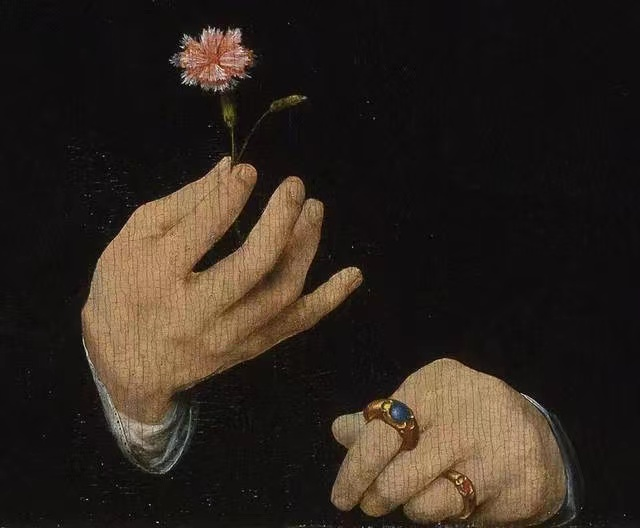

最新文章
安静 Jay
只剩下钢琴陪我谈了一天，睡着的大提琴，安静的旧旧的。我想你已表现的非常明白，我懂我也知道，你没有舍不得，喔喔～你说你也会难过我不相信，牵着你陪着我，也只是曾经。希望他是真的比我还要爱你，我才会逼自己离开

The Green Book [Tony & Shirley]
Dear Dolores: When i think of you，I'm reminded of the beautiful plains of Iowa.The distance between us is breaking my spirit.
My time and experiences without you are meaningless to me.Falling in love with you was the easiest thing i have ever done.Nothing matters but you.I am the luckiest man alive，and every moment i am without you，i realize this.
I love you the day i met you，i love you today，and i will love you to rest of my life.
p.s. kiss my kids.